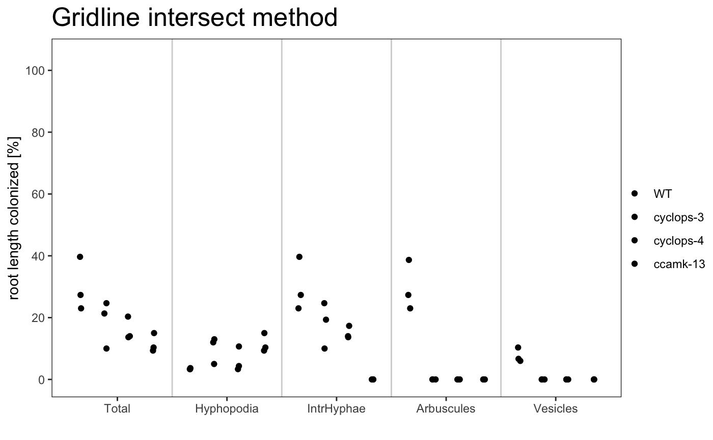
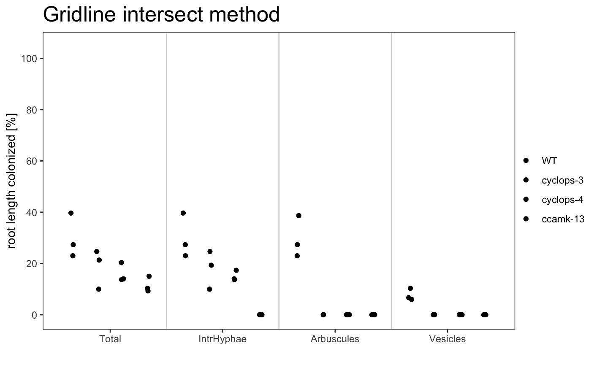
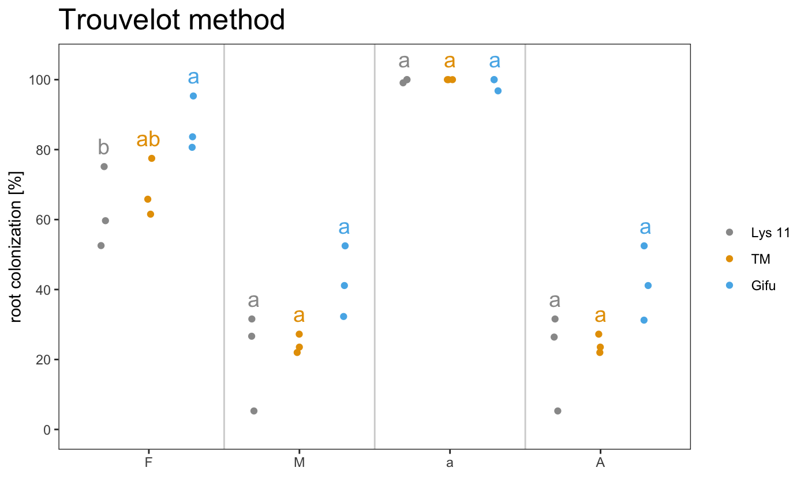

Arbuscular mycorrhizal fungi colonization package
Marco Chiapello
Ramf.RmdIntroduction
The package is meant to help scientists to compute the degree of arbuscular mycorrhizal colonization, producing tables, robust statistics and different kind of plots.
All the functions of the package work independently of the colonization scoring system.
Grid scoring system
The data should be provided in a csv table like the follow one:
| samples | replicates | Total | Hyphopodia | IntrHyphae | Arbuscule | Vesicle |
|---|---|---|---|---|---|---|
| WT | A | 30 | 3 | 30 | 30 | 10 |
| WT | A | 24 | 5 | 24 | 24 | 7 |
| WT | B | 20 | 2 | 20 | 20 | 5 |
| WT | B | 15 | 2 | 15 | 15 | 3 |
| cyclops-3 | A | 18 | 6 | 18 | 9 | 0 |
| cyclops-3 | A | 16 | 10 | 10 | 0 | 0 |
| cyclops-3 | B | 20 | 12 | 20 | 0 | 0 |
| cyclops-3 | B | 14 | 4 | 14 | 0 | 0 |
| … | … | … | … | … | … | … |
The table contains:
7 columns with specific headers
The first 2 columns (samples and replicates) must be present
The last 5 columns (Total, Hyphopodia, IntHyphae, Arbuscule and Vesicle) could not be all present
If the headers are not the same of the ones in the example table the software will not be able to read the table
As many row as you need
The first element of column “samples” will be used as control for the statistical analysis (in this example “WT” will be used as control)
Loading the data
To load data in, use the follow command:
readData(file.csv, type = c(“grid”, “trouvelot”))
Example
# Grid
f <- dir(system.file("extdata", package = "Ramf"), full.names = TRUE, pattern = "grid.csv")
gr <- readData(f, type = "grid")
# Grid incomplete
f <- dir(system.file("extdata", package = "Ramf"), full.names = TRUE, pattern = "grid_incomplete.csv")
gri <- readData(f, type = "grid")
# Trouvelot
f <- dir(system.file("extdata", package = "Ramf"), full.names = TRUE, pattern = "trouvelot.csv")
tr <- readData(f, type = "trouvelot") It is very important the order of the samples in the csv file. The first sample will be considered the control.
Summarize data
To summarise the data and export the scoring results in a tabular format use the follow command:
am_summary
Example
## $`Summary per Replicate`
## # A tibble: 12 x 7
## Samples Replicates Total Hyphopodia IntrHyphae Arbuscules Vesicles
## <chr> <chr> <dbl> <dbl> <dbl> <dbl> <dbl>
## 1 WT A 23 3.33 23 23 6.67
## 2 WT B 39.7 3.33 39.7 38.7 10.3
## 3 WT C 27.3 3.67 27.3 27.3 6
## 4 cyclops-3 A 21.3 12 19.3 0 0
## 5 cyclops-3 B 24.7 13 24.7 0 0
## 6 cyclops-3 C 10 5 10 0 0
## 7 cyclops-4 A 14 3.33 14 0 0
## 8 cyclops-4 B 20.3 10.7 17.3 0 0
## 9 cyclops-4 C 13.7 4.33 13.7 0 0
## 10 ccamk-13 A 9.33 9.33 0 0 0
## 11 ccamk-13 B 10.3 10.3 0 0 0
## 12 ccamk-13 C 15 15 0 0 0
##
## $`Summary per Sample`
## # A tibble: 4 x 11
## Samples Total_mean Hyphopodia_mean IntrHyphae_mean Arbuscules_mean
## <chr> <dbl> <dbl> <dbl> <dbl>
## 1 WT 30 3.44 30 29.7
## 2 cyclop… 18.7 10 18 0
## 3 cyclop… 16 6.11 15 0
## 4 ccamk-… 11.6 11.6 0 0
## # … with 6 more variables: Vesicles_mean <dbl>, Total_se <dbl>,
## # Hyphopodia_se <dbl>, IntrHyphae_se <dbl>, Arbuscules_se <dbl>,
## # Vesicles_se <dbl>
##
## attr(,"class")
## [1] "am_summary" "list"## $`Summary per Replicate`
## # A tibble: 12 x 6
## Samples Replicates Total IntrHyphae Arbuscules Vesicles
## <chr> <chr> <dbl> <dbl> <dbl> <dbl>
## 1 WT A 23 23 23 6.67
## 2 WT B 39.7 39.7 38.7 10.3
## 3 WT C 27.3 27.3 27.3 6
## 4 cyclops-3 A 21.3 19.3 0 0
## 5 cyclops-3 B 24.7 24.7 0 0
## 6 cyclops-3 C 10 10 0 0
## 7 cyclops-4 A 14 14 0 0
## 8 cyclops-4 B 20.3 17.3 0 0
## 9 cyclops-4 C 13.7 13.7 0 0
## 10 ccamk-13 A 9.33 0 0 0
## 11 ccamk-13 B 10.3 0 0 0
## 12 ccamk-13 C 15 0 0 0
##
## $`Summary per Sample`
## # A tibble: 4 x 9
## Samples Total_mean IntrHyphae_mean Arbuscules_mean Vesicles_mean Total_se
## <chr> <dbl> <dbl> <dbl> <dbl> <dbl>
## 1 WT 30 30 29.7 7.67 4.99
## 2 cyclop… 18.7 18 0 0 4.44
## 3 cyclop… 16 15 0 0 2.17
## 4 ccamk-… 11.6 0 0 0 1.75
## # … with 3 more variables: IntrHyphae_se <dbl>, Arbuscules_se <dbl>,
## # Vesicles_se <dbl>
##
## attr(,"class")
## [1] "am_summary" "list"## $`Summary per Replicate`
## # A tibble: 9 x 6
## # Groups: Samples [3]
## Samples Replicates F M a A
## <chr> <chr> <dbl> <dbl> <dbl> <dbl>
## 1 Lys 11 A 59.7 26.6 99.1 26.4
## 2 Lys 11 B 52.6 5.29 100 5.29
## 3 Lys 11 C 75.1 31.6 100 31.6
## 4 TM A 61.5 23.5 100 23.5
## 5 TM B 65.8 22 100 22
## 6 TM C 77.5 27.2 100 27.2
## 7 Gifu A 83.7 32.3 96.8 31.2
## 8 Gifu B 95.3 52.5 100 52.5
## 9 Gifu C 80.6 41.1 100 41.1
##
## $`Summary per Sample`
## # A tibble: 3 x 9
## Samples `Mean F` `Standard error… `Mean M` `Standard error… `Mean a`
## <chr> <dbl> <dbl> <dbl> <dbl> <dbl>
## 1 Lys 11 62.5 6.66 21.2 8.07 99.7
## 2 TM 68.3 4.77 24.3 1.55 100
## 3 Gifu 86.6 4.48 42.0 5.85 98.9
## # … with 3 more variables: `Standar error a` <dbl>, `Mean A` <dbl>,
## # `Standard error A` <dbl>
##
## attr(,"class")
## [1] "am_summary" "list"Statistical analysis
The statistical analysis is performed using the kruskal function from agricolae package. To read more about the statatical framework, refer to this link.
am_stat
Example
## group1 group2 Total.pval Hyphopodia.pval IntrHyphae.pval
## 1 WT cyclops-3 0.1029 0.0184 0.0509
## 2 WT cyclops-4 0.0397 0.2495 0.0124
## 3 WT ccamk-13 0.0097 0.0184 0.0003
## 4 cyclops-3 cyclops-4 0.5565 0.1261 0.3856
## 5 cyclops-3 ccamk-13 0.1636 1.0000 0.0063
## 6 cyclops-4 ccamk-13 0.3843 0.1261 0.0249
## Arbuscules.pval Vesicles.pval
## 1 0 0
## 2 0 0
## 3 0 0
## 4 1 1
## 5 1 1
## 6 1 1## group1 group2 Total.pval IntrHyphae.pval Arbuscules.pval
## 1 WT cyclops-3 0.1029 0.0509 0
## 2 WT cyclops-4 0.0397 0.0124 0
## 3 WT ccamk-13 0.0097 0.0003 0
## 4 cyclops-3 cyclops-4 0.5565 0.3856 1
## 5 cyclops-3 ccamk-13 0.1636 0.0063 1
## 6 cyclops-4 ccamk-13 0.3843 0.0249 1
## Vesicles.pval
## 1 0
## 2 0
## 3 0
## 4 1
## 5 1
## 6 1## group1 group2 F.pval M.pval a.pval A.pval
## 1 Lys 11 TM 0.2488 0.8276 0.4732 0.7152
## 2 Lys 11 Gifu 0.0065 0.0254 0.8546 0.0800
## 3 TM Gifu 0.0308 0.0190 0.3758 0.0474By default, the correction method is “none”, but it is possible to select between: Bonferroni, Holm, Hochberg, Bonferroni, Benjamini-Hochberg, Benjamini-Yekutieli or fdr adjustment. For more details refer to agricolae package.
Example
## group1 group2 Total.pval Hyphopodia.pval IntrHyphae.pval
## 1 WT cyclops-3 0.2059 0.0553 0.0611
## 2 WT cyclops-4 0.1190 0.2994 0.0248
## 3 WT ccamk-13 0.0583 0.0553 0.0020
## 4 cyclops-3 cyclops-4 0.5565 0.1892 0.3856
## 5 cyclops-3 ccamk-13 0.2454 1.0000 0.0189
## 6 cyclops-4 ccamk-13 0.4612 0.1892 0.0374
## Arbuscules.pval Vesicles.pval
## 1 0 0
## 2 0 0
## 3 0 0
## 4 1 1
## 5 1 1
## 6 1 1## group1 group2 Total.pval IntrHyphae.pval Arbuscules.pval
## 1 WT cyclops-3 0.2059 0.0611 0
## 2 WT cyclops-4 0.1190 0.0248 0
## 3 WT ccamk-13 0.0583 0.0020 0
## 4 cyclops-3 cyclops-4 0.5565 0.3856 1
## 5 cyclops-3 ccamk-13 0.2454 0.0189 1
## 6 cyclops-4 ccamk-13 0.4612 0.0374 1
## Vesicles.pval
## 1 0
## 2 0
## 3 0
## 4 1
## 5 1
## 6 1## group1 group2 F.pval M.pval a.pval A.pval
## 1 Lys 11 TM 0.2488 0.8276 0.7098 0.7152
## 2 Lys 11 Gifu 0.0194 0.0381 0.8546 0.1201
## 3 TM Gifu 0.0462 0.0381 0.7098 0.1201Plot data
To summarise the data in a graphical way the package provide 3 plot types:
-
barplot
am_barplot am_barplo2
-
boxplot
am_boxplot am_boxplot2
-
dotplot
am_dotplot am_dotplot2
It is possible to plot a simple plot.


Example
The plot can use different color palettes. We advise to use Colorbrewer or Colorgorical.


The title of the plot can be changed
The plotting system is based on ggplot2, so is possible to change some parameters
am_barplot(gr, main = "Grid plot") + theme(panel.grid.major.y = element_line(size = 3, colour = "grey80"))
It is also possible to include the statistical results under the plot with the appropriate alpha
The asterisks above the plot show which sample is significant different from the control. The control is always the first element of the list.
It is also possible to include the statistical correction for the pvalues.

The asterisks allow to grafically dispay the statistical difference between the control sample and the other samples. If you want show the statistical difference between all the samples, you can add “letters” to the plot. Letters group the samples accordingly to they statistical difference.

Save data
To export the data, a “save data” function is provided.
Summary data: the function exports both the summary per replicate and the summary per sample in two distinct csv files.
Statistical data: the function exports a csv file
Plots: the function exports the plots and useful options can be used to export a pubblication ready image.
Example
# Save the summary
am_save(grs) # Two files will be saved: Summary_per_Replicate.csv and Summary_per_Sample.csv
am_save(trs, "Trouvelot") # Two files will be saved: Trouvelot_per_Replicate.csv and Trouvelot_per_Sample.csv
# Save the statisticas
am_save(am_stat(gr)) # One file called Summary_Stat.csv will be saved
am_save(am_stat(tr, method = "BH"), "Trouvelot") # One file called Trouvelot_stat.csv will be saved
# Save the plots
am_save(am_barplot(gr), "barplor_grid.pdf")## Saving 7.29 x 4.51 in imagep1 <- am_barplot(gr, cbPalette = c('#f7f7f7', '#d9d9d9', '#bdbdbd', '#969696'), main = "Trouvelot", annot = "letters", method = "BH")
am_save(p1, "dotplor_trouvelot.pdf", width = 21, height = 21, units = "cm", dpi = 300)
# Save jpg plot
am_save(p1, "dotplor_trouvelot.jpg")## Saving 7.29 x 4.51 in image